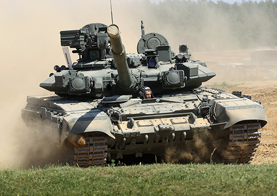

Танк Т-90А
Предназначен для ведения боевых действий в непосредственном соприкосновении с противником, поддержки мотострелковых подразделений при прорыве обороны и развитии тактического успеха в оперативный, уничтожения живой силы, бронеобъектов, огневых средств и малоскоростных воздушных целей, а также повышения активности и устойчивости обороны.
| Технические характеристики | |
|
Экипаж, чел.
|
3 |
|
Масса, т |
46,5+2% |
|
Мощность двигателя, л.с. |
1000 |
|
Максимальная скорость движения, км/ч |
60 |
|
Средняя скорость движения по грунтовой дороге, км/ч |
40-45 |
|
Запас хода по топливу, км |
550 |
|
Преодолеваемые препятствия: высота стенки, м ширина рва, м брод (с подготовкой), м глубина водной преграды, преодолеваемой с оборудованием для подводного вождения, м |
0,9 2,8 1,2 5 |